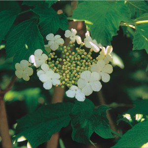
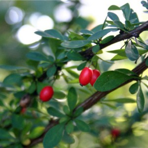
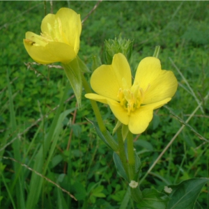

Surviving the Wilderness - The Field Guide
Fortunately, our hot air balloon extravaganza included a planned meal at our landing point so we happened
to have a pre-packed lunch. Unfortunately, pre-packed lunches only last so long and we soon came to realize the
sticky situation we were in. Fortunately, our interest in forestry meant we had tucked away our handy-dandy
field guide packed with helpful knowledge of edible plants in our wicker basket. Unfortunately, the field guide
was in Spanish. Fortunately, we were both equipped with AP Spanish knowledge and able to muddle our way through
the language barrier to understand some of the book (and by muddle, we mean use pictures).
Thus, we decided to ration our meager portion of commercially packaged durable processed foods and
scavenge around for edible fruits and other plants. We were careful to avoid mushrooms (because those poisonous
mushrooms sure are good at looking like edible ones, sneaky little fungi) and found ourselves snacking on things
like dandelions and assorted berries.


Survival Tips
Catch rain in tarps or containers.
On beaches, dig holes deep enough to allow water to seep in then drop hot rocks into the water to create
steam, place a cloth over the hole to collect the condensation.
Boiling water will ensure that most disease-causing organisms will be killed.
Eat only plants that you can identify with 100% certainty. Better safe than sorry!
Avoid mushrooms at all costs! They're too hard to properly identify.


